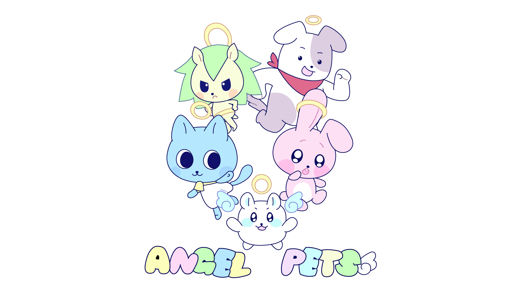
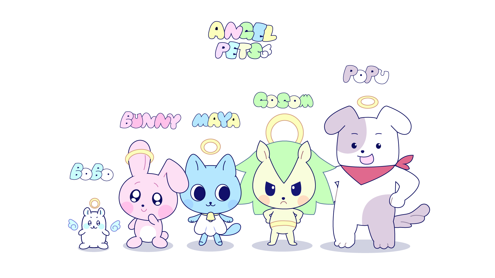

ANGEL PETS - 캐릭터 소개


다섯 마리의 수호천사들
보보 (BOBO)
버니 (BUNNY)
마야 (MAYA)
고솜 (GOSOM)
포푸 (POPU)
보보, 버니, 마야, 고솜, 포푸로 이루어진 수호대는 모두 친숙한 반려동물들의 모습을 하고 있다
저마다의 성격과 개성, 취향이 뚜렷하게 존재하며 모티브가 된 동물의 특성을 닮은 부분도 많다
index
시나리오
일러스트
컨셉 구상안